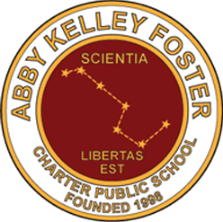
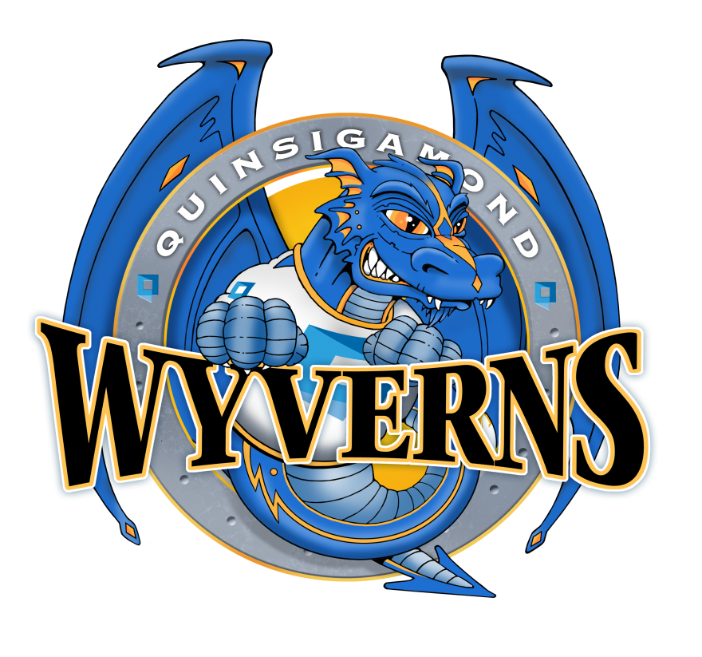
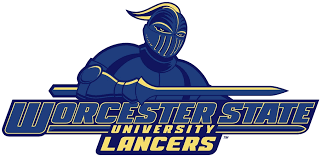

Summary
this resume displays the work experience achivenments and education of David Bamfo
Education
Abby Kelley Foster Charter Public School 2006-2020
Quinsigamond Community College 2024 - 2026
Worcester State University 2026 - 2028
  
Work experience
chick-fil-la
front-of-house
back-of-house
target
overnight inbound
Skills
c++
java
html
java script
Awards
worcester state university deans list
QCC merit list
CPP.prg.1:Introduction to Programming in C++
Yours for humanity award :equality and justice
boys tract and field mvp
Contact
|
Hobbies